دقة النتائج
اختبارات وتحاليل وفق المواصفات القياسية المعتمدة.
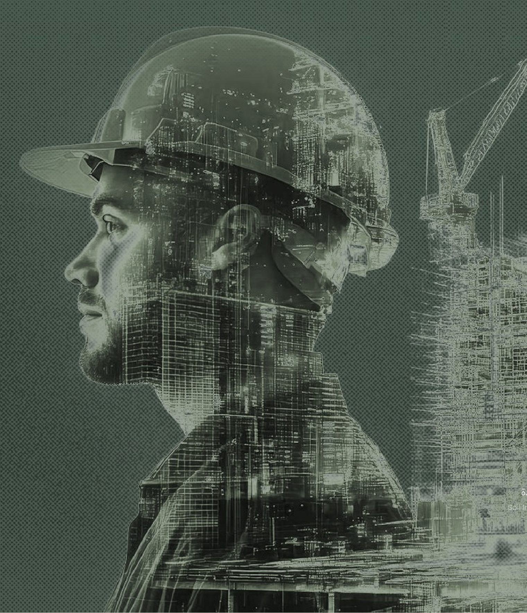
مكتب تقارير للاستشارات الهندسية
أعمال الجسات · الاختبارات الجيوتقنية · ضبط الجودة · التقارير الفنية المعتمدة
من نحن
مكتب تقارير للاستشارات الهندسية أحد المكاتب المتخصصة في مجال الجسات والاختبارات الجيوتقنية وإعداد التقارير الفنية المعتمدة.
يضم المكتب نخبة من المتخصصين أصحاب الخبرة في أعمال فحص التربة، والدراسات الجيوتقنية، واختبارات المواد، وضبط الجودة للمشروعات الإنشائية.
نلتزم بتطبيق أفضل الممارسات الهندسية والمواصفات القياسية العالمية بما يضمن دقة نتائجنا وموثوقية توصياتنا الفنية، ونهتم بتطوير كوادر فنية مؤهلة من خلال وحدات التدريب وإعداد الأبحاث، وتوفير أحدث الأجهزة المستخدمة في أعمال الفحص والاختبار.
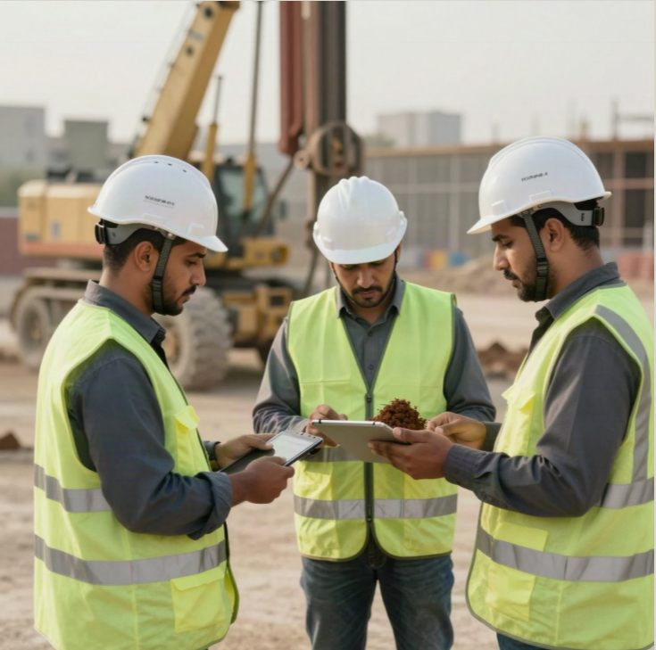
اختبارات وتحاليل وفق المواصفات القياسية المعتمدة.
ASTM · BS · DIN والكود المصري.
خبرات في الجيوتقنية والجيولوجيا الهندسية.
معمل مركزي مجهز ومعايرة دورية للأجهزة.
التخصصات والمجالات
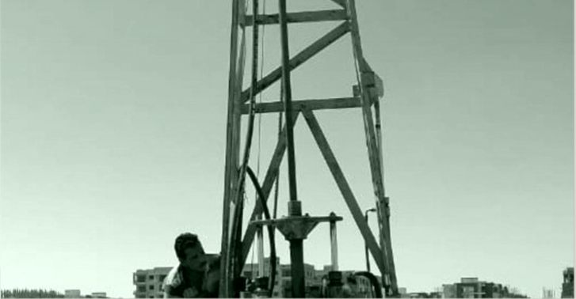
01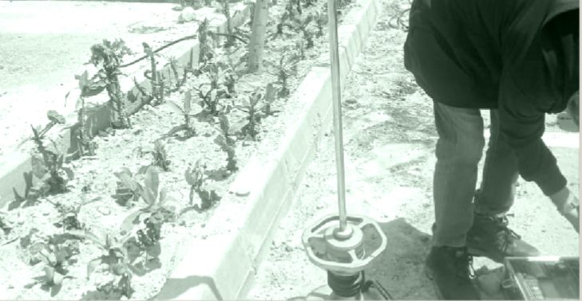
02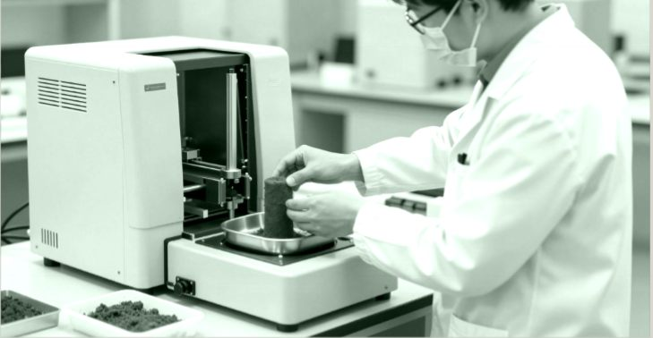
03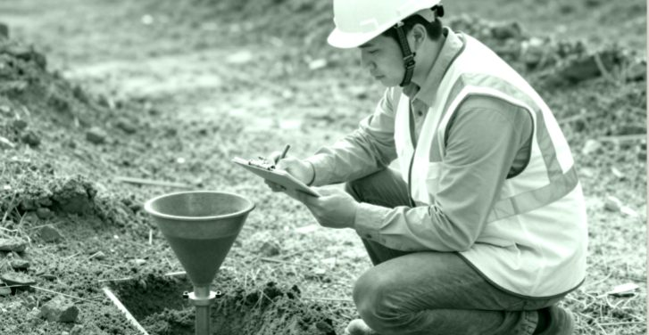
04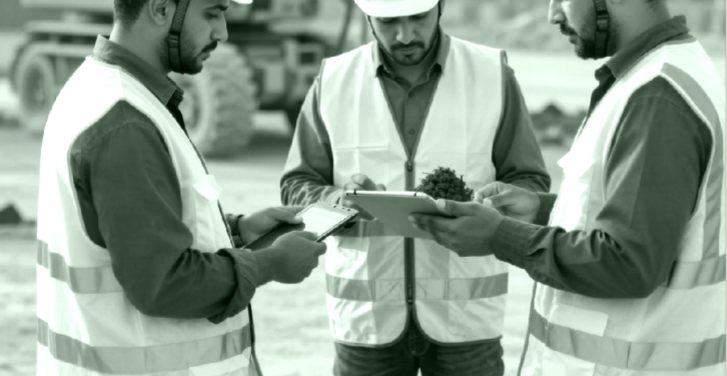
05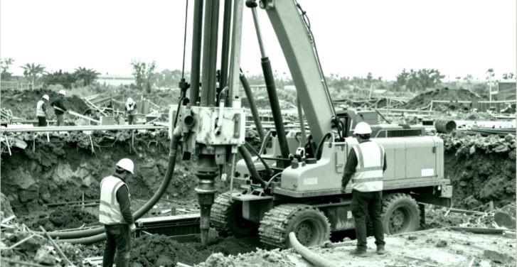
06الحقل والمعمل
يختص المكتب بتنفيذ ومتابعة أهم الاختبارات الحقلية الخاصة بالتربة وأعمال الإحلال والردم، لضمان مطابقة الأعمال للمواصفات الفنية وتحقيق أعلى درجات الجودة في مواقع التنفيذ.
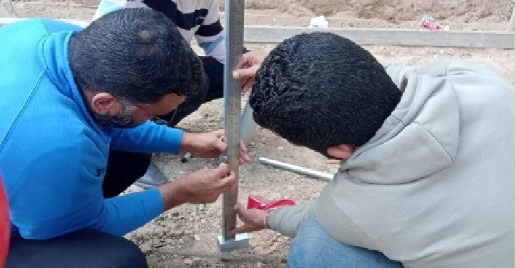
لتقييم خواص التربة في الموقع والتقدير السريع لدرجة تماسك الطبقات. من مواقعنا: مصنع أعلاف نيو هوب، ومواقع مشروعات القطار السريع، ومواقع أعمال الإحلال.
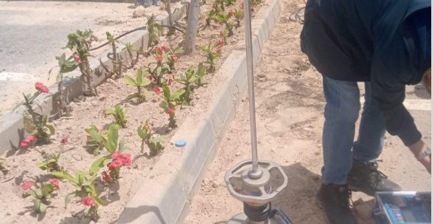
اختبار المخروط الرملي واختبارات التحميل الاستاتيكي والديناميكي لمتابعة جودة التنفيذ. من مواقعنا: نادي هليوبوليس، ومشروع ساوث ميد بالضبعة، ومشروعات إسكان بمدينة الشروق.
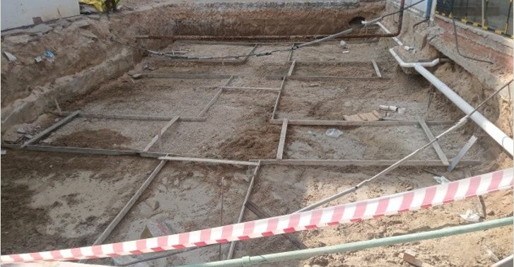
معاينة قاع الحفر مباشرة قبل صب الأساسات، ومطابقة طبقة الإحلال للسمك والكثافة المطلوبين. من مواقعنا: مبنى الشهر العقاري بنادي هليوبوليس، ومجمع الغنيمي الصناعي، ومشروعات المرافق في أسوان.
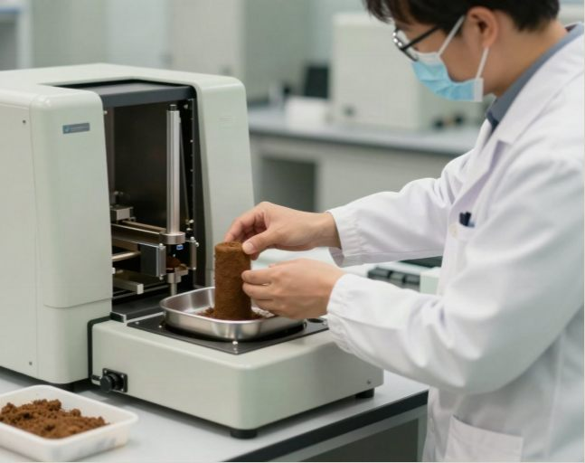
يضم المكتب معملًا مركزيًا مجهزًا بأجهزة حديثة لتنفيذ جميع اختبارات التربة والمواد، مع الالتزام بالمواصفات القياسية وضمان دقة النتائج من خلال كوادر فنية متخصصة.
المشروعات الرئيسية
جسات محاجر الرخام بالجلالة بأعماق تصل إلى 40 مترًا.
الاستشاريون والعملاء
تشرف الإدارة العليا على اعتماد التقارير الفنية ومتابعة الجودة، وعلى خمس وحدات: وحدة الجسات، والمعمل المركزي، ووحدة ضبط الجودة، وإدارة الأجهزة، والتدريب وإعداد الأبحاث. ونتعاون مع استشاريين معتمدين لمراجعة التقارير واعتمادها ومتابعة النتائج وتقديم التوصيات أثناء التنفيذ.
نعمل وفق أطر قانونية ومهنية معتمدة: القيد بالسجل التجاري، والتسجيل بمصلحة الضرائب، واستشاريون جيوتقنيون معتمدون. المستندات متاحة للعملاء عند الطلب.
تطبيقنا
حاسبات لحوالي 40 اختبارًا للتربة والركام والأسفلت والخرسانة، وتقارير PDF منظمة باسم شركتك ومشروعك، ولوج للمشروع مع تقرير مجمع، ودورات تدريبية مجانية ومدفوعة.
النتائج أداة مساعدة لا تغني عن مراجعة المهندس المسؤول.
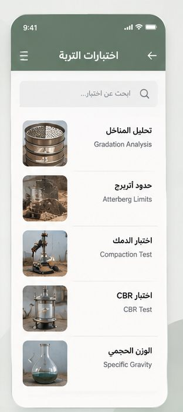
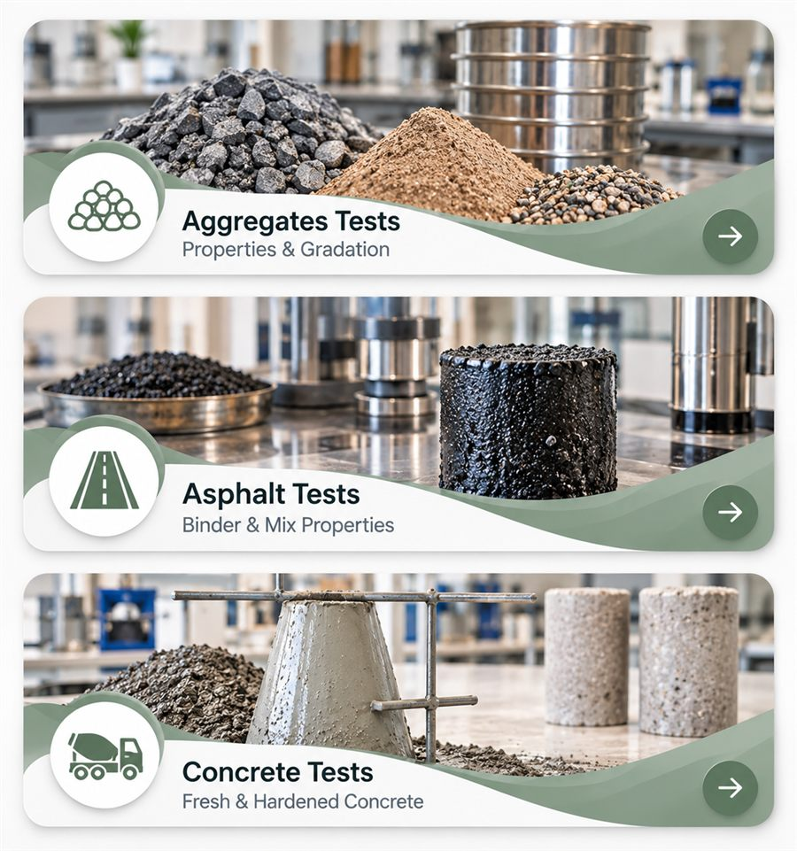
تواصل معنا
يهدف المكتب إلى تقديم خدمات موثوقة لجميع العملاء، مع ضمان أعلى مستويات الجودة الفنية في جميع أنحاء مصر.
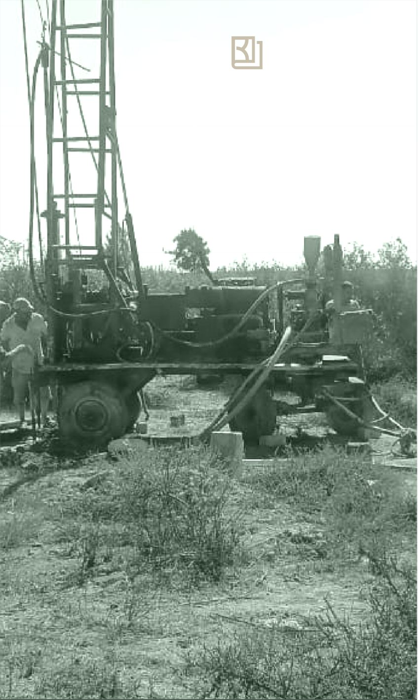